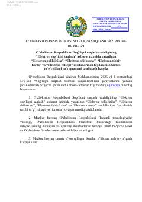

ESTibbiyot tizimida raqamli modullardan foydalanish tartibini belgilovchi yo'riqnoma.
Mazkur buyruq O'zbekiston Respublikasi Sog'liqni saqlash vazirligining 'Elektron sog'liqni saqlash' axborot tizimidagi elektron modullardan foydalanish tartibini belgilaydi. Hujjatda elektron poliklinika, shifoxona, tibbiy karta va retsept modullaridan foydalanish, ma'lumotlarni kiritish hamda xavfsizlik talablari batafsil bayon etilgan. Ushbu yo'riqnoma tibbiyot muassasalari va dorixonalarning raqamli tizimlar bilan ishlash jarayonlarini tartibga soladi.